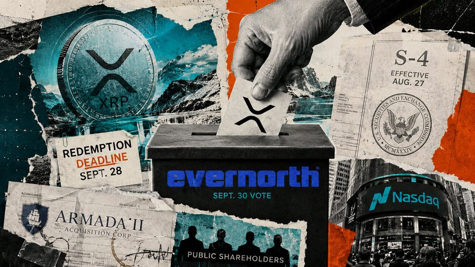
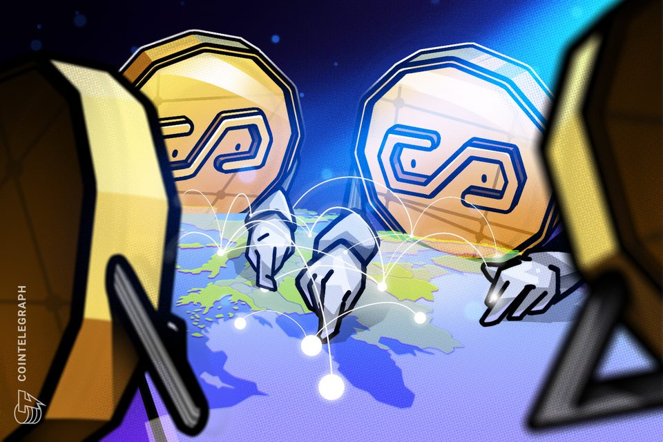

August 29, 2026
Daily headline set with source diversity, cleaned links, and local static rendering.

Bitcoin's Oldest Coins Are Waking Up in 2026 at a Pace Rarely Seen
Galaxy Research shows coins untouched for 10-plus years moving at an unusual pace in 2026, with six ancient wallets shifting $40 million in a single 10-day stretch this month.
The SEC is reviewing automatic filing pathways after exotic crypto and event-linked ETF proposals flooded the market
Wall Street now wants a ticker to hold almost any financial idea an investor might type into a brokerage search bar, from Bitcoin and funds promising two or three times a stock's daily return to private assets and...
Tokenized assets are busier than the data shows
Tokenized assets are busier than the data shows

Here's what happened in crypto today
Need to know what happened in crypto today? Here is the latest news on daily trends and events impacting Bitcoin price, blockchain, DeFi, Web3 and crypto regulation.

BitGo Buys NYDIG's Institutional Trading Arm to Beef Up Derivatives and Financing
The roughly $42.5 million cash-and-stock deal adds derivatives, structured products and capital-markets capabilities, while letting NYDIG focus on its power and data-center business.

Evernorth's XRP strategy hinges on one number after Nasdaq vote
Armada II holders can approve and still redeem, making trust cash and public float the measures that matter next. The post Evernorth’s XRP strategy hinges on one number after Nasdaq vote appeared first on CryptoSlate.
Bitcoin wallets untouched for 10 years moved $40 million. Most avoided exchanges
Bitcoin wallets untouched for 10 years moved $40 million. Most avoided exchanges

Stablecoins not credible for payments at scale, BIS chief says
BIS chief Pablo Hernández de Cos said stablecoins lack credibility for payments at scale, while a new FSI study highlights sharp differences in issuer rules.

Bitcoin Rally Stalls, But Long-Term Sentiment Remains Bullish
BTC gave back some of its gains after Fed Chair Kevin Warsh talked tough on inflation, but prediction market traders are still leaning bullish.
Bitcoin miners are no longer pure crypto proxies and are morphing into high-performance computing hubs
Bitcoin gained 21.5% from the Aug. 17 close through Aug. 21, yet six of seven large US-listed miners finished the same trading stretch much lower. MARA Holdings rose 16.1% and came closest to BTC, while Cipher Digital...

Ripple is preparing XRP Ledger for quantum computers before ‘Q-Day' arrives
Ripple is preparing XRP Ledger for quantum computers before ‘Q-Day' arrives
Bitcoin ETFs end 9-day inflow streak as BTC dips below $78K
US spot Bitcoin ETFs posted $201.8 million in net outflows Friday, led by ARK 21Shares, as total fund assets slipped back below $100 billion.